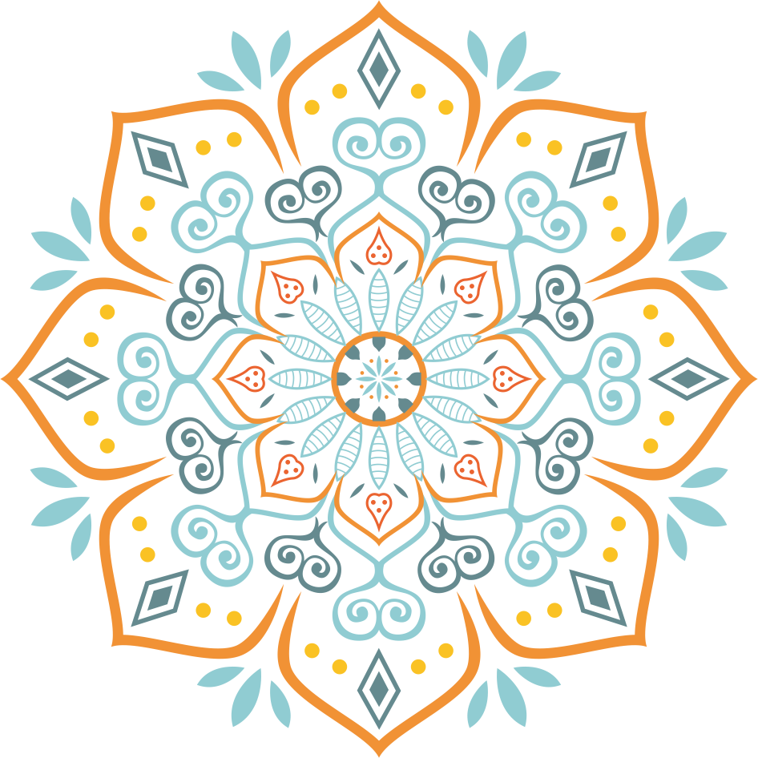
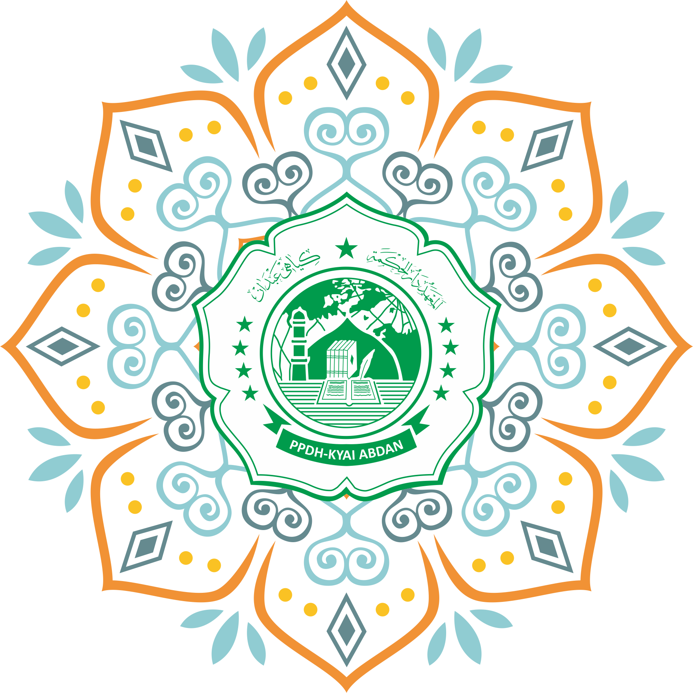

UNDANGAN
PELETAKKAN BATU PERTAMA SMK DARUL HIKMAH
DAN ASRAMA PUTRA-PUTRI PONDOK PESANTREN
DARUL HIKMAH KYAI ABDAN, SERTA
HAFLAH ATTASYAKUR LIL IKHTITAM KE-18
PONDOK PESANTREN DARUL HIKMAH KYAI ABDAN
KEMBANG KUNING, REJOSARI, PAKIS, MAGELANG

Kepada Yth, Bapak/Ibu/Saudara/I
Mohon maaf apabila ada kesalahan dalam penulisan nama, alamat, dan gelar



PONPES DARUL HIKMAH KYAI ABDAN
Jln, balak Kembang kuning, Rejosari, Pakis, magelang
Assalamu'alikum Warahmatullahi Wabarakatuh
Puji Syukur Kehadirat Allah SWT yang telah melimpahkan rahmat
dan Hidayahnya, dan semoga kita selalu dalam limpahan iman kepada-Nya,Amiin
Sehubung dengan akan dilaksanakanyya Peletakan Batu Pertama
Pembangunan SMK Darul Hikmah dan Asrama Putra-Putri Pon-Pes Darul
Hikmah Kyai Abdan serta Haflah Attasyakur lil Ikhtitam yang ke-18 bersama
yang terhormat Gubernur dan wakil Gubernur Jawa Tengah serta Bupati dan Wakil
Kab. Magelang, dengan ini kami atas nama panitia dan Keluarga Besar
Yayasan Darul Hikmah Kyai Abdan Bermaksud mengundang Bapak dalam acara
Tersebut, yang Insya Allah akan dilaksanakan pada:
| Hari,tanggal | : | Ahad,06 Juli 2005 |
| Waktu | : | 20.00 WIB-Selesai |
| Tempat: | : | Komplek Ponpes Darul Hikmah Kyai Abdan 2 |
| | kembang Kuning, Rejosari, Pakis, Magelang |
| Acara: | : | Haflah Attasyakur Lil Ikhtitam ke-18 |
| | Pondok Pesantren Darul Hikmah Kyai Abdan |
Merupakan suatu kebanggan dan rasa terimakasih bagi kami apabila
Bapak berkenan hadir dalam dalam acara tersebut.
Demikian surat undangan ini kami buat,
atas perhatian dan kehadiran Bapak kami ucapkan banyak terimakasih.
Wassalamu'alikum warahmatullahi Wabarakatuh

PEMBUKAAN
PEMBACAAN KALAM WAHYU ILAHI
SAMBUTAN SAMBUTAN
A/N PANITIA/SANTRI
A/N PENGASUH PONDOK PESANTREN
KETUA YAYASAN
PEJABAT PEMERINTAH
PEMBUKAAN
WISUDA AL QURAN
PEMBUKAAN
MAUIDZOH HASANAH
1. DR. KH. Reza Ahmad Zahid, LC.,MA
( Lirboyo Kediri )
2. K.H Nusroh Wahid, SS.,MSi
( Mentri ATR BPN. JAKARTA )
DO'A PENUTUP

PONDOK PESANTREN DARUL HIKMAH KYAI ABDAN
PaudQu ABC El Rahma - Mi Quran - MTs Yaspi Pakis
MA Darul Hikmah kyai Abdan - S1 PAI - S2 PAI
Alamat Lengkap
Jln.Balak, Kembang kuning, rejosari, pakis, magelang